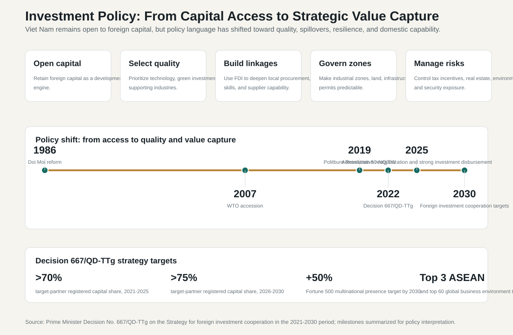
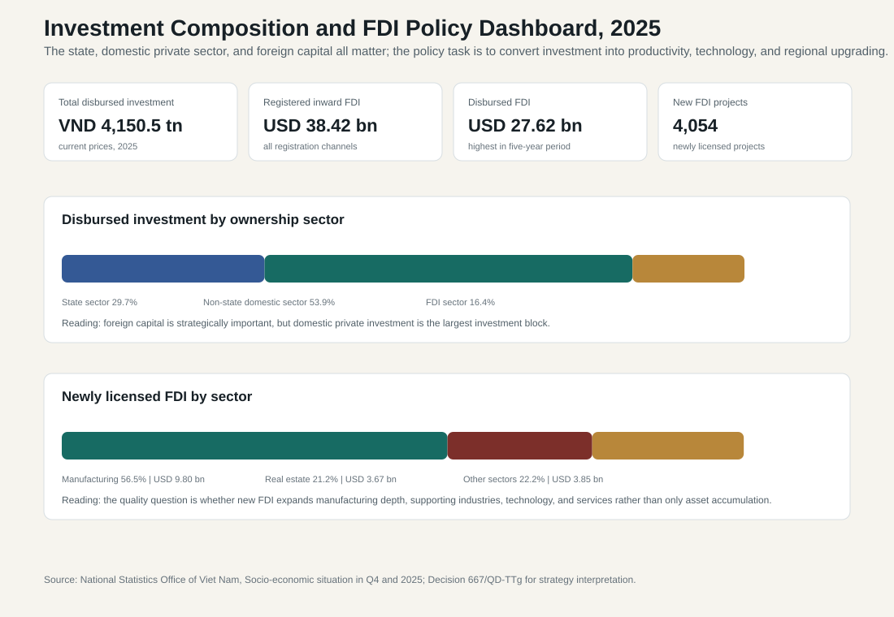

10.4 Investment Rules, Zones, and Industrial Policy
ASEAN comparative lens (2026). Vietnam should be read in ASEAN comparison as ASEAN's most prominent party-led, export-manufacturing upgrading case. Unlike the Philippines' service-remittance profile, Thailand's older industrial-tourism base, Malaysia's resource-industrial federal structure, or Indonesia's archipelagic domestic-market scale, Vietnam's comparative issue is how a socialist party-state manages very open global production networks. For this section, the regional comparison should compare trade, FDI, current-account structure, supply-chain depth, remittances, tourism receipts, and regional integration with ASEAN peers. Local comparable indicators show: population 100.99 million (2024), rank 3 among the nine ASEAN reports in this workspace; GDP US$476.39 billion (2024), rank 4 among the nine ASEAN reports in this workspace; GDP per capita US$4,717 (2024), rank 5 among the nine ASEAN reports in this workspace; real GDP growth 7.09% (2024), rank 1 among the nine ASEAN reports in this workspace; government effectiveness 0.09 (2023), rank 6 among the nine ASEAN reports in this workspace; internet use 84.15% (2024), rank 4 among the nine ASEAN reports in this workspace. Use `sources/documents/regional/asean_comparative_lens_2026.md` together with ASEANstats, ASEAN Secretariat materials, and the country processed-indicator files before making cross-ASEAN claims.
The preceding sections showed that Viet Nam's trade and investment model has two faces. It has produced extraordinary export growth, strong FDI inflows, industrial employment, and deeper insertion into global value chains. It has also created exposure to the U.S. market, dependence on Asian intermediate inputs, foreign-invested export dominance, uneven domestic supplier capability, and limited domestic ownership of technology. Section 10.4 therefore widens the lens: how does the Vietnamese state use investment rules, industrial zones, and industrial policy to turn openness into domestic development?
The answer is that Viet Nam remains strongly open to foreign capital, but the government's attitude has become more selective. In the early reform period, the core challenge was to attract capital, normalize external economic relations, and create confidence after the transition from central planning. In the WTO and export-platform period, the priority was to build industrial zones, simplify investment procedures, expand trade agreements, and position Viet Nam as a reliable manufacturing base. The current policy language is different. It still welcomes FDI, but it increasingly asks what kind of FDI is being attracted, whether it brings technology, whether it creates linkages with domestic firms, whether it supports green and digital transformation, and whether it strengthens Viet Nam's strategic autonomy.
Decision No. 667/QD-TTg, approving the Strategy for foreign investment cooperation in the 2021-2030 period, captures this shift. The strategy does not reject foreign capital. It tries to upgrade the terms on which foreign capital enters. Its targets include increasing the share of registered capital from specified partner countries and territories to more than 70 percent in 2021-2025 and more than 75 percent in 2026-2030, increasing the number of Fortune 500 multinationals with presence and operations in Viet Nam by 50 percent, and placing Viet Nam among the top three ASEAN countries and top 60 countries globally for business-environment indicators. The policy message is clear: Viet Nam wants capital, but it wants capital connected to technology, standards, innovation, supply-chain upgrading, and institutional credibility.

10.4.1 Investment Rules as Development Strategy
Investment rules operate as more than legal procedures. They define how the state allocates opportunity, risk, land, tax incentives, market access, administrative support, and regulatory scrutiny. Viet Nam uses investment law, enterprise law, industrial-zone regulation, land procedures, tax incentives, environmental approvals, public investment planning, customs administration, and provincial investment promotion as parts of one development toolkit. The state does more than wait for investors. It tries to shape where they locate, what sectors they enter, what infrastructure they use, and how they connect to national development goals.
The policy challenge is balance. If rules are too restrictive, Viet Nam loses investors to other ASEAN and Asian production locations. If rules are too permissive, the state may accept low-value assembly, polluting projects, land speculation, fiscal giveaways, weak labor standards, or enclave-style FDI with few domestic linkages. The investment regime must therefore combine openness with discipline: fast procedures for high-quality projects, credible screening of risky projects, transparent land and tax rules, predictable dispute resolution, and stronger monitoring of implementation commitments.
This is especially important after the 2025 administrative reorganization. Larger provincial-level units may make it easier to plan regional industrial corridors, logistics systems, energy infrastructure, and workforce development. But reorganization can also disrupt investment services if land records, business registration, tax offices, environmental approvals, and industrial-zone authorities do not coordinate smoothly. Investors care about national policy, but they experience Viet Nam through provincial and local administration. Investment competitiveness is therefore a test of local state capacity.
10.4.2 Zones, Corridors, and the Geography of Industrial Policy
Industrial zones and economic zones translate investment policy into territory. They offer land, infrastructure, power connections, customs access, labor pools, environmental systems, and administrative services in concentrated sites. This has been central to Viet Nam's export-manufacturing success. Foreign firms did not enter an abstract market; they entered industrial zones connected to ports, highways, airports, customs offices, provincial governments, and labor markets.
Zones solve coordination problems, but they also create governance risks. First, land conversion can generate social conflict, compensation disputes, and speculative pressure. Second, industrial-zone incentives can reduce fiscal revenue if tax benefits are granted without strong spillovers. Third, environmental standards matter because manufacturing upgrading can increase water, waste, air, and carbon pressures. Fourth, labor standards and housing matter because industrial zones depend on migrant workers. Fifth, zones can become enclaves if they connect foreign firms to global buyers but do not connect them to domestic suppliers.
The policy objective should therefore be to move from industrial-zone occupancy to industrial ecosystem quality. A successful zone should be judged by more than occupancy. It should support supplier networks, training centers, logistics services, testing laboratories, standards certification, environmental management, digital infrastructure, and links with universities and domestic firms. This is where industrial policy becomes administrative policy: the state has to coordinate ministries, provincial governments, zone authorities, firms, schools, banks, customs agencies, and infrastructure providers.
10.4.3 Investment Composition and the 2025 FDI Signal
The 2025 investment data show why Viet Nam cannot rely on foreign capital alone. NSO reported total disbursed development investment of VND 4,150.5 trillion at current prices. The domestic non-state sector accounted for 53.9 percent, the state sector for 29.7 percent, and the FDI sector for 16.4 percent. This composition matters. Foreign capital is highly strategic because it anchors exports and technology-intensive production, but domestic private investment is the largest investment block. State investment also remains crucial because public infrastructure, energy, transport, education, water systems, and digital administration determine whether private and foreign investment can be productive.

The foreign-investment signal remains strong. In 2025, registered inward foreign investment reached USD 38.42 billion, while disbursed FDI reached USD 27.62 billion, the highest level in the previous five-year period. Viet Nam licensed 4,054 new FDI projects with USD 17.32 billion in newly registered capital, while adjusted capital for existing projects reached USD 14.07 billion and capital contributions and share purchases reached USD 7.03 billion. These figures show that Viet Nam remains attractive to foreign investors despite global uncertainty.
The sectoral composition also matters. Processing and manufacturing accounted for USD 9.80 billion, or 56.5 percent of newly licensed FDI capital in 2025. Real estate accounted for USD 3.67 billion, or 21.2 percent. This is a useful warning. Manufacturing FDI can support exports, jobs, technology exposure, and supplier networks, especially when it moves into higher-value segments. Real estate FDI can support urban development and services, but it can also fuel land speculation, asset cycles, and uneven regional development if not governed carefully. A quality-FDI strategy should therefore not only ask how much capital entered. It should ask whether capital deepens productive capability.
10.4.4 The Government's Attitude toward Foreign Capital
The Vietnamese government's attitude toward foreign capital has evolved through four stages. The first was cautious opening. After Doi Moi, foreign capital became acceptable as part of renovation and reconstruction, but it was still embedded in a socialist political framework. The second was export-platform pragmatism. As Viet Nam normalized relations, joined ASEAN, entered the WTO, and signed trade agreements, FDI became a central growth tool. The third was selective upgrading. By the late 2010s and early 2020s, policy documents increasingly emphasized quality, efficiency, technology transfer, environmental standards, domestic linkages, and stronger institutions. The fourth, now emerging, is strategic positioning: Viet Nam wants to benefit from supply-chain diversification, semiconductors, AI, green investment, and high-value services while avoiding excessive dependence on any single foreign market or investor group.
This evolution should not be misunderstood as a turn against FDI. Viet Nam still competes for foreign investment and still needs foreign capital, technology, management, and market access. The change is that the state is trying to bargain for better developmental terms. It wants investors that bring technology, train workers, use local suppliers, comply with standards, invest in supporting industries, and help Viet Nam move up global value chains. The government's posture is therefore open but more demanding.
The difficulty is implementation. It is easier to announce selective FDI than to enforce it. Provincial governments may compete for projects and incentives. Local officials may prefer visible capital commitments over long-term spillovers. Ministries may have different priorities. Some projects promise technology transfer but deliver limited domestic learning. Domestic firms may not be ready to supply multinational firms even when investors are willing to localize procurement. A quality-FDI strategy therefore requires not only better screening but also domestic capability-building.
10.4.5 Industrial Policy and Domestic Capability
Industrial policy in Viet Nam should be understood as a capability-building agenda. It includes supplier development, workforce training, science and technology policy, digital infrastructure, standards and testing, public investment, finance for domestic firms, support for small and medium enterprises, and coordination with foreign investors. The policy goal is not to replace global value chains with self-sufficiency. It is to capture more value inside those chains.
This requires several instruments. First, supplier-development programs should help domestic firms meet quality, cost, delivery, environmental, and compliance requirements. Second, vocational education and universities should align more closely with electronics, semiconductors, automation, logistics, AI, software, and precision manufacturing. Third, public investment should prioritize transport, power reliability, industrial water, digital connectivity, customs modernization, and climate resilience in export corridors. Fourth, FDI incentives should be tied more clearly to performance: local procurement, training, R&D, technology transfer, carbon standards, and long-term presence. Fifth, competition and anti-corruption policy should prevent industrial policy from becoming a channel for capture, favoritism, or inefficient subsidies.
There is also a fiscal issue. Investment incentives can attract firms, but tax holidays, land preferences, and infrastructure subsidies have opportunity costs. Viet Nam must evaluate whether incentives produce durable spillovers. A low-value assembly project with large tax benefits may create jobs, but it may not justify fiscal cost if it does not strengthen suppliers, skills, technology, or regional development. A higher-quality project may deserve stronger support if it brings training, R&D, supplier development, and strategic technology.
10.4.6 Strategic Challenges
The trade and investment model faces eight major challenges.
| Challenge | Why it matters | Policy response |
|---|---|---|
| U.S. market exposure | Large exports to the United States create tariff, rules-of-origin, and compliance risk. | Strengthen origin verification, customs transparency, market diversification, and domestic value-added documentation. |
| Asian input dependence | China, South Korea, Japan, and ASEAN supply critical components, machinery, and materials. | Diversify suppliers where feasible while building domestic supporting industries. |
| FDI export dominance | Foreign-invested firms account for a large share of exports. | Link incentives to local procurement, training, technology transfer, and supplier integration. |
| Domestic supplier weakness | Local firms often lack scale, quality certification, finance, and technology. | Expand supplier-development programs, technical assistance, credit access, and standards infrastructure. |
| Real estate and land risk | Investment can flow into asset accumulation rather than productive capability. | Tighten land governance, zoning, environmental review, and fiscal-risk assessment. |
| Provincial incentive competition | Localities may compete for capital without evaluating spillovers. | Coordinate investment promotion through national strategy, regional planning, and transparent incentive rules. |
| Green and digital transition | New investment must meet carbon, energy, data, and technology requirements. | Link industrial policy with power planning, digital infrastructure, data governance, and green standards. |
| Administrative capacity | Investment upgrading depends on permits, land records, customs, inspections, education, and infrastructure. | Strengthen local implementation after the 2025 reorganization and monitor project commitments. |
10.4.7 Interpretation
Viet Nam's investment policy is entering a more difficult stage. The earlier challenge was to attract foreign capital and build an export platform. The new challenge is to extract more domestic capability from openness without undermining the openness that made growth possible. This requires a more sophisticated state: one that can welcome investors, select better projects, discipline incentives, coordinate zones and corridors, build domestic suppliers, protect labor and environmental standards, and maintain credibility with major partners.
The policy direction is therefore not "less FDI." It is better FDI, stronger domestic firms, and more capable industrial governance. Viet Nam's growth model will remain open, but future success will depend on whether investment rules and industrial policy can turn foreign capital into domestic productivity, technology learning, and resilient value-chain participation. If the state manages this transition well, trade and FDI can support movement toward higher income. If not, Viet Nam may remain a very successful production platform while capturing too little of the knowledge, profits, and technological autonomy embedded in global production.